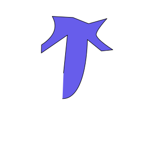
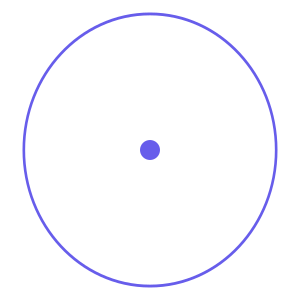
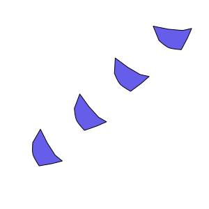
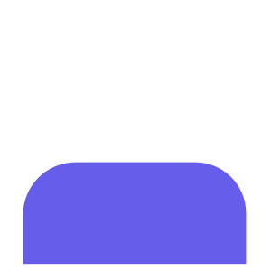

All Known Runes
Rune images are estimations based on description
Translation
Rune
Description
Self

Allows one to pull energy from their center. For people, this includes their body Main Rune behind Path Power of Self
Beyond
Allows one to pull energy from around them. Main rune behind Path Power of Beyond
Death

Effects things like used to have a soul inside of them, or even the soul
itself. Main Rune behind Path of Remnant Power
Strength
Effects durability and increases the force which things hit
Swift

Effects how quickly or slowly things move
Weight

Effects how something interacts with gravity
Focus
Effects how well something thinks. Does not make someone "smarter",
but can increase the speed at which someone thinks.
Solid
Despite it's name, effects how well something can be remolded. Example:
if used on person, it can make them more flexible.
Life
Effects the "life" of an object. For living, this means health,
for non-living, can effect how that object stays together. Example:
remove life from a rock might make it crumble into gravel.
Sight
Effects how well something can detect their surroundings. Despite the name,
this also increases things like hearing and taste
Fire
Effects heat held by objects
Mind
Allows much deeper thought, or basically, makes someone smarter
Balance
Changes emotional states of living things
Contain
Allows the holding, as well as mass release, of energy. Main Rune
behind Runettic Burst Powers
Insight
Allows one effect the energy of the soul
Runes
Runes are capable of letting people access power they wouldn't otherwise have. While each word has it's own rune, they tend to follow similar patterns.
- Top heavy symbols mean powerful
- Bottom heavy symbols means subtle
- Center runes mean inward/hidden
- Outline runes mean outward/visible
- Inverted to change the effect
Rune Scripting
Rune Scriptors are those who have better understanding of the Huzari language. While Rune Scriptors are rare, we learn a lot from the one interaction Yeagin has with a Scriptor, including how to language is written. Important Principles when scripting include:
- Order of Runes
- Size of Runes
- Distance apart from each other
- Location of runes on object
- Protection circles made from runes in a circle, with a single self rune at the center, surrounded by inverted Solid runes in a weaving pattern. This allows anyone in the circle to protect themselves from outsider, until their energy runs out
- The spear of Ember Lance has a large amount of Contain runes along the shaft of his spear, and a single fire runes at the dulled tip, which allows it to hold lots of energy from any source, and then launch it all as fire. Ember Lance also has head wrappings and clothes covered in reverse fire runes, which allows his to be all but invulnerable to fire or heat
Strongest Rune Feats
- We know the planet was destroyed, and what's left of the planet is being held together by one massive run script. While unknown who wrote the Rune Script, it's probably written by a previous Runettic Weaver that know Rune Scripting
- A Rune Scripting Master knew the Huzari language so well he could speak it. While their fate is unknown, we do know they killed a previous Runettic Weaver in a 1v1
- It's implied that all three calamity beasts were born from Runes, and those beasts might also explain why the world got destroyed
- Yeagin was given power to become the next Runettic Weaver by himself in the future. While we don't know how he did this, it was probably using scripting.
Q & A
- Why are there different nations that can practice different runettic Paths? While not entirely confirmed, it is believed that since Runettic is based down through bloodlines, something to do with the body of a person gives them access to a runettic path. While some believe that it has to do with the biology of the person, the more plausible theory is that it has something to do with the soul. That is why when the character Heath got bodyswapped, he still had access to his own runettic power.
- Why can some Runettic users use their powers without Runes? While a lot of characters noticably have runes on them, like Yeagin and Ember Lance, other characters aren't described as having any, and Chrine is confirmed not to have any runes on his body. Some believe that these individuals have power outside the runes, maybe they are blood related to the Huzari, while another theory suggests that since the runes are just a language of symbols, there are other ways to access runes. Examples of this include Crine, who must keep up an irregular breathing technique or he loses access to his path, which could be explained by breathing similar to the way runes are spoken